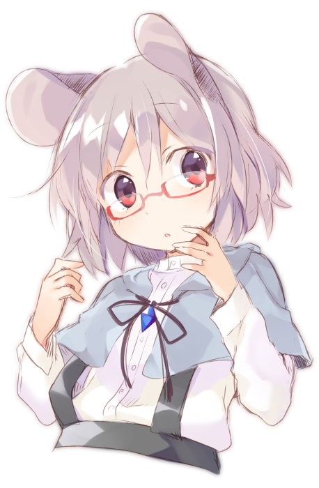

Назрин - лучшая мышь
Назрин (яп. ナズーリン, система Поливанова: Надзу:рин, ромадзи: Nazūrin) ― ёкай-мышь, способный лозоход и предводительница большого количества полевых мышей. Как лидер она часто использует мышей в поисках различных вещей. Впрочем, если поручить ей найти еду, то она, скорее всего, будет съедена.